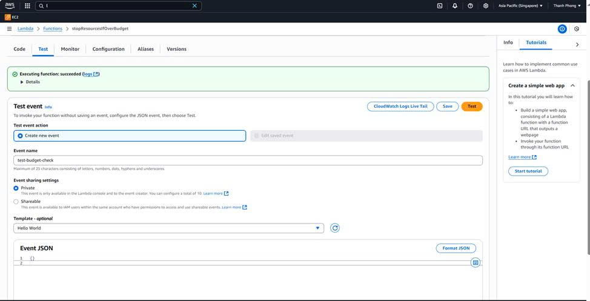
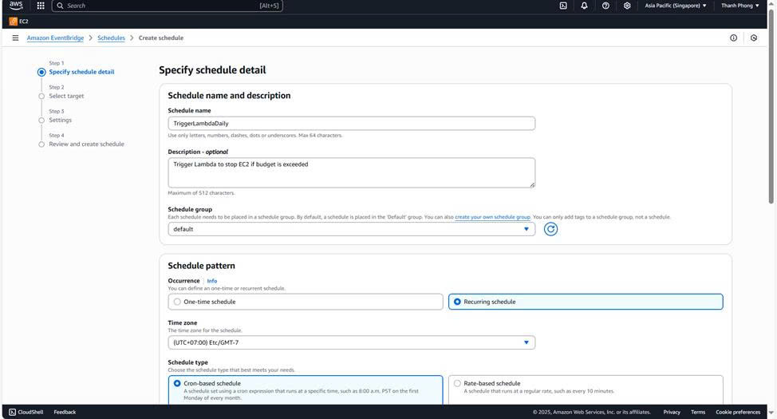
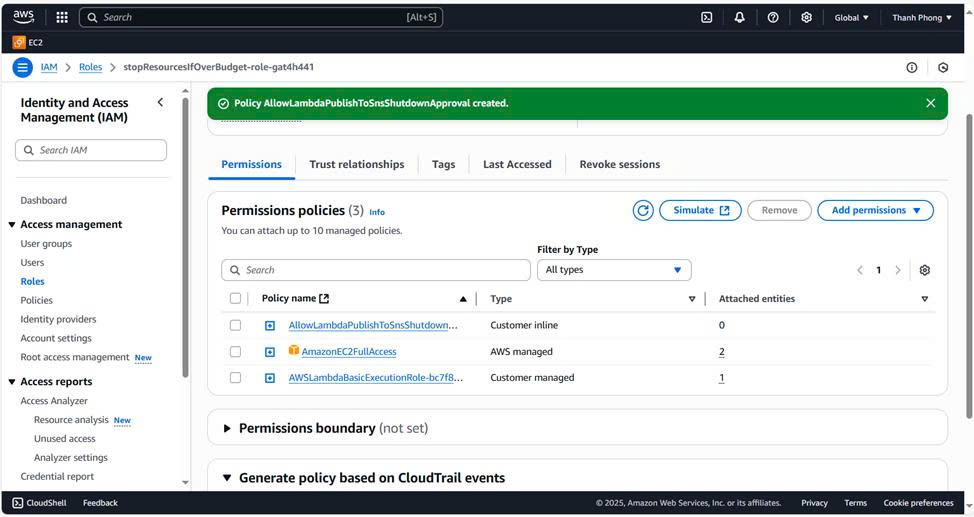

Trusted entity: Chọn AWS service
Use case: Chọn Lambda
Gán 2 policy:
• AmazonEC2FullAccess → để dừng EC2
• CloudWatchReadOnlyAccess → để đọc thông tin giám sát ngân sách
Đặt tên role: LambdaBudgetEnforcerRole
Bấm Create Role → hoàn tất
Nhấn “Create function”.
Chọn Author from scratch.
Điền thông tin:
Function name: stopEC2WhenOverBudget
Runtime: Python 3.12
Permissions: → Chọn: “Create a new role with basic Lambda permissions”
Nhấn Create function.
Vào Lambda > chọn function stopResourcesIfOverBudget
Chọn tab “Code” > chỉnh sửa nội dung function
Nhấn “Deploy” để cập nhật
Hiện thông báo “Successfully updated” là xong
Test thủ công lại Lambda function
Vào AWS Lambda Console
→ Chọn function stopResourcesIfOverBudget
Chuyển sang tab "Test" (gần nút Deploy)
Tạo 1 test event
o Click Configure test event
o Event name: test-budget-check
o Event JSON:
Nhấn "Test" để chạy hàm.

Ở phần Permissions, chọn:
“Create a new role with basic Lambda permissions”
Vào Lambda Console > hàm của bạn > Tab Permissions
Nhấn vào Role name
Trong trang IAM Role:
Nhấn “Add permissions” > “Attach policies”
Tìm và tick chọn:
AmazonEC2FullAccess
“Nhấn Add permissions”
+ Viết mã Lambda để dừng EC2
Triển khai Lambda tự động dừng EC2
Tạo test event cho Lambda
Nhấn “Create schedule”.
Đặt tên lịch, ví dụ: StopEC2-DailyScheduler.
Schedule pattern: chọn Recurring → chọn Daily.
Target: chọn Lambda function → chọn hàm stopResourcesIfOverBudget.
Role: dùng role mặc định hoặc tạo mới nếu cần.
Nhấn “Create schedule” để hoàn tất.
Tạo lịch kích hoạt Lambda hằng ngày
Schedule detail:
Tên: TriggerLambdaDaily
Mô tả: Kích hoạt Lambda dừng EC2 nếu vượt ngân sách
Lặp lại: Hằng ngày lúc 09:00 (UTC+7)
Biểu thức cron: 0 9 * * ? *
Target detail:
Gắn hàm Lambda cần chạy
Bấm “Create schedule” để hoàn tất

Nhập tên lịch, ví dụ: StopEC2-DailyScheduler Description (tùy chọn):
Mô tả nội dung lịch (có thể bỏ qua)
Schedule group:
Giữ nguyên default hoặc tạo nhóm riêng nếu muốn.
Schedule pattern:
o Chọn Recurring schedule (lặp lại theo lịch)
o Chọn múi giờ phù hợp, ví dụ: Asia/Ho_Chi_Minh
Chọn tab Configuration (nằm ở giữa bên dưới thanh tiêu đề)
Trong menu bên trái, chọn Permissions
Ở mục Execution role, bạn sẽ thấy một dòng tên Role màu xanh (ví dụ: lambda-role-abcxyz) → Click vào tên Role đó, AWS sẽ mở tab IAM mới.
Trong trang IAM Role, kéo xuống phần Permissions policies
Nhấn nút Add permissions > chọn Attach policies
Ở ô tìm kiếm, gõ: AmazonEC2FullAccess
Tick chọn vào dòng đó
Nhấn Next: Review → sau đó nhấn Add permissions
Vào dịch vụ Amazon EventBridge.
Ở menu bên trái, chọn Scheduler.
Nhấn “Create schedule”.
Nhấn “Select” và chọn hàm Lambda stopResourcesIfOverBudget.
Trong Payload, nhập nội dung hành động cần thực hiện
Nhấn “Next” để sang bước tiếp theo.
→ Bật lịch ngay (tick Enable).
Execution role:
→ Chọn Create new role .
Action after completion:
→ Chọn NONE .
Retry policy:
→ Max age: 2h 30m
→ Retry: 1 lần nếu lỗi.
DLQ (Dead-letter queue):
→ None (không cần hàng chờ lỗi).
Encryption:
→ Dùng mặc định aws/scheduler .
AWS sẽ tạo một EventBridge Scheduler.
Vào đúng thời gian bạn đã chọn, nó sẽ gọi Lambda function stopResourcesIfOverBudget.
Lambda sẽ thực hiện hành động (ví dụ: dừng EC2 nếu vượt ngân sách).
Tick vào hành động Publish
Bấm vào “Add ARN” tại phần “Resources”
Ở phần:
• Region: ap-southeast-1
• Account: 863690437968
• Topic Name: ec2-shutdown-approval
Bấm Add
• Bấm Create policy
• Vào SNS > topic bạn vừa tạo > Create subscription
• Protocol: Email
• Endpoint: Nhập email bạn muốn gửi phê duyệt (của bạn chẳng hạn)
• AWS sẽ gửi một email để bạn xác nhận → Bắt buộc phải bấm Confirm
Gán quyền gửi thông báo SNS cho Lambda Vào IAM > Roles
Tìm role của Lambda: stopResourcesIfOverBudget-role-xxxxx
Click role → chọn Attach policies
Chọn AllowLambdaSNSPublish → Bấm Attach policy 